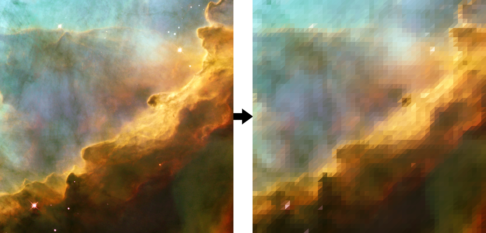
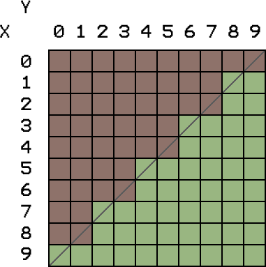
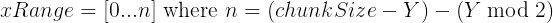
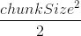
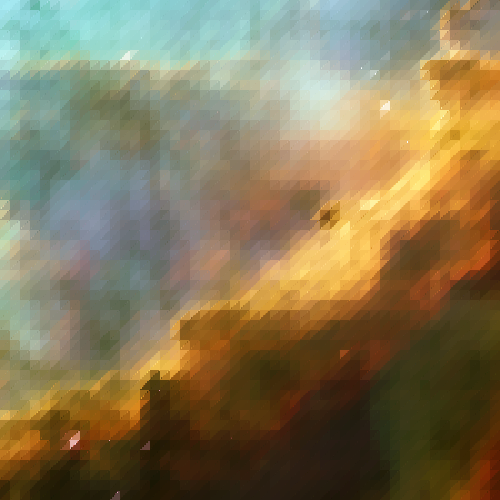
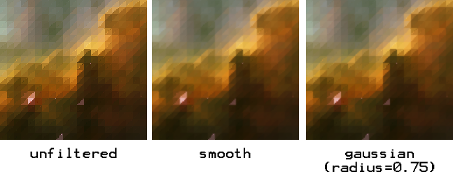
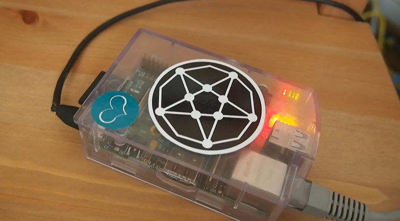

Crystalliser
A while ago I wrote a small sketch in Processing that took an image and 'crystallised' it - pixelating it via triangles, rather than squares. The result produced something that looked vaguely crystal-ish, like so:
A few people thought it was cool and I thought it would be nice if it was publicly accessable. The form that I thought this should take was a twitter bot that would reply to tweets that had pictures attached with a crystallised version of it. I also decided that I'd do it via a python script (using Tweepy and Pillow) as practice!
Crystallisation
I thought it would be good to re-write the crystallisation logic from scratch for 2 reasons:
- In Processing, pixels in an image are represented as a 1-dimensional array, so that a 10px by 10x image is an array with a max index of 99. In python, however, pixels in an image are represented via zero-based coordinates, so that the last pixel in a 10px by 10px image can be accessed via the coordinate [9,9].
- The original implementation was a little lazily written and biased the upper half of the chunk by a couple of pixels compared to the lower half. Didn't make much difference in practice, but it made the difference between the 2 functions hard to understand.
The crystallisation process first splits the image into 'chunks' of a specific size. I decided on 10px for the chunk size, primarily because the effects of the crystallisation process aren't as nice at sizes above or below it, and also because its a nice, simple number. These 10px chunks are then split in half and the colours in each half are averaged:
The algorithm for both the upper and lower half increments through the Y values and calculates the range of X values to average up. In the following examples 'chunkSize' actually refers to (chunk size - 1), due to the pixel map having 0 based indices. For the top half, the range is described by:
To calculate the bottom half of the chunk, the range is similarly calculated:
Now each half has  pixels. However, as the grid above shows, this means that the diagonals are 2px right then 2px up, which leads to jagged edges:
It's not really noticeable in areas of low colour differentiation. But in areas where there is a strong colour change or a contrast between light and dark it really stands out. An immediate solution was to use the ImageFilter library to blur the image and try and reduce the jagged edges:
While the results are not as unsightly as the unfiltered version, they're still a little unsatisfying. Evidence of jagged edges are still visible in the gaussian blur, and the smoothed one is a little too blury. None of them capture the sharpness of the original Processing sketch. I then tried a different approach: anti-aliasing. The original image and the chunk size are scaled up to twice their original dimensions and the averaging work is done on the larger version. When done, the image in then scaled down to its original size using anti-aliasing. The result is something much closer to the original Processing sketch result:

Naively just scaling up the image twice introduces its own problem - there are now 4 times as many pixels to work on as before, increasing the processing time considerably. I lazily got around this by only taking every other colour value when working out the average colour, since pixels in the old image will be 2px by 2px blocks in the new one.
Twitter Integration
After the crystallisation was down to a somewhat satisfactory standard, I integrated it with the twitter API via Tweepy. Whenever the script is run, it grabs the mentions timeline from twitter with a given sinceID (which is unpickled from a serialized file in the same directory). It then pickles the first returned mention's id to be used as the sinceID for the next time the script is run. It then pulls the image file from the media URL given in the tweet, crystallises it and tweets it back at the user for every tweet returned in the list of mentions.
I then set up the script to run as a cron job every 10 minutes on the Raspberry Pi under my desk:
And it seems to work! The bot is currently running at @crystalliser and the code is available on GitHub. There's still a few improvements I need to make on it, primarily to do with efficiency. The crystallisation takes around 10-20+ seconds to run on the small Pi which is a little too long. I also want to be able to support gifs at some point, to return an animated gif with all the frames crystallised, but that would take much longer depending on how many frames the gif had. I could host it on Heroku for a bit more processing power but I like the idea of actually using the Raspberry Pi for something.